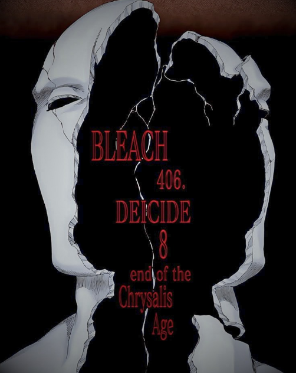
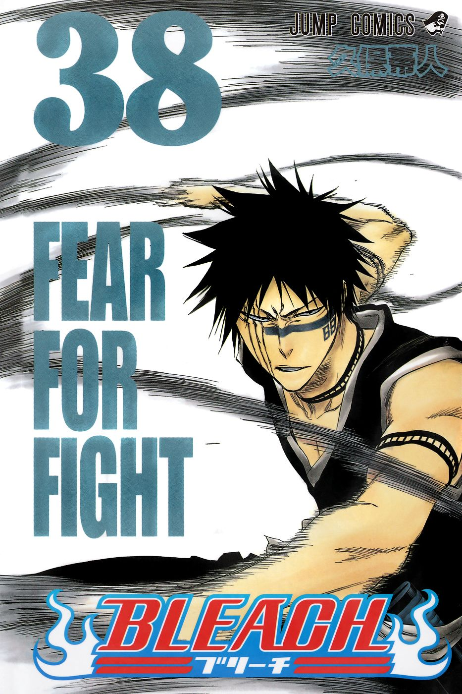
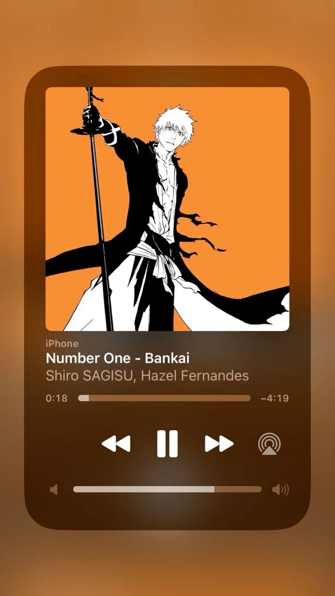
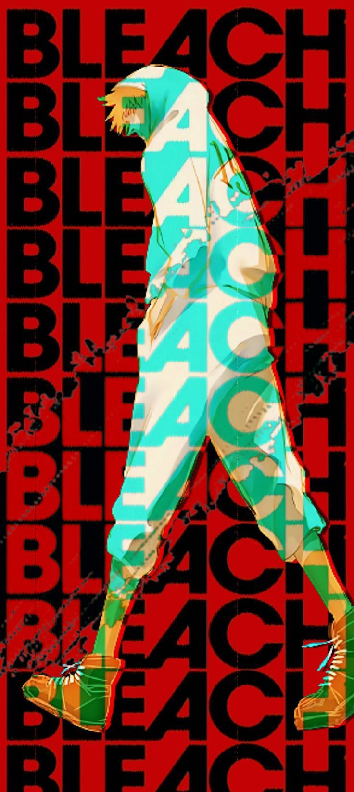

PROJECT SOULS
Sobre Project Souls
Minha conexão com Bleach
Lembro que estava na sala vendo Netflix, quando de repente vejo o nome Bleach no catálogo de animes em 2017.
No começo ainda era muito novo para entender a complexidade do anime, que não envolvia apenas poderes e lutas, mas um recheio com filosofias, arte, música e poesias que já me chamavam a atenção. Isso só foi aumentando ao passar do tempo.
Bleach é sobre ciclos. Vida e morte, transformação e renascimento, os diferentes estados do nosso ser, tanto interiores quanto exteriores. É também sobre como cada indivíduo enfrenta suas próprias mudanças, perdas e, especialmente, o luto.
Nascimento do Projeto
Eu, Felipe Cruz, quis desenvolver este projeto envolvendo Bleach por enxergar nele uma oportunidade de compartilhar uma obra que considero tão especial.
Além de sua representatividade, Bleach nos convida a refletir sobre diferentes aspectos da vida. Um dos temas que mais me marcou foi a coragem. Entendimento comum é pensar que a coragem é ausência do medo. Porém, é sobre a capacidade de avançar no desconhecido ou na dificuldade mesmo sentido medo.
Meu objetivo com o Project Souls é transmitir Bleach por inteiro, de acordo com aquilo que vivi, interpretei e absorvi dessa obra.
INTRODUÇÃO
O QUE É BLEACH?
Em um universo onde o mundo dos vivos e o mundo espiritual coexistem, forças sobrenaturais disputam o equilíbrio entre diferentes dimensões. Em Bleach, acompanhamos um mundo marcado por almas, guerreiros espirituais e criaturas que desafiam a fronteira entre a vida e a morte.
NARRATIVA
A história acompanha Ichigo Kurosaki, um jovem que acaba envolvido no mundo dos Shinigamis e assume a responsabilidade de proteger os vivos das ameaças espirituais.
MUNDOS E DIMENSÕES
Mundo Humano - Soul Society - Muken - Hueco Mundo - Garganta - Wandenreich - Inferno - Dangai - Mundo Interno
● Os mundos e dimensões serão mais explorados na página do Universo

ALMA DE BLEACH
POESIA

As poesias de Bleach, presentes no início dos volumes do mangá, expressam sentimentos, pensamentos e conflitos dos personagens.
MÚSICA

A trilha sonora de Bleach mistura diferentes estilos musicais, como rock, eletrônico, hip-hop e música orquestral.
ESTÉTICA

Elementos japoneses tradicionais, como samurais e kimonos, com influências urbanas, góticas, modernas e simbolismos